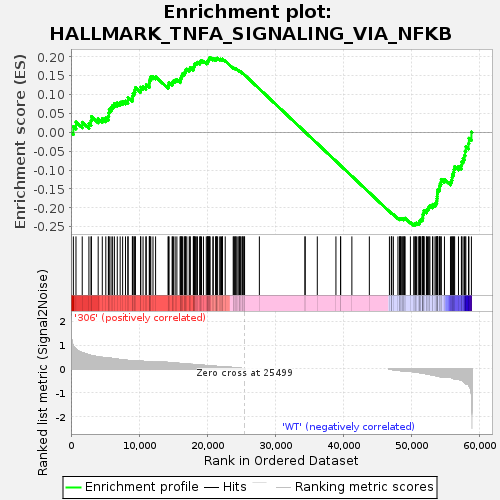
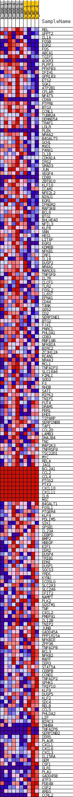
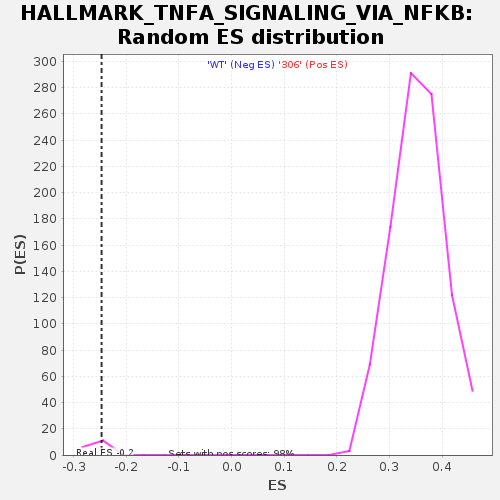

| | | Dataset | 306_WT_express.306_WT.cls#306_versus_WT |
| Phenotype | 306_WT.cls#306_versus_WT |
| Upregulated in class | WT |
| GeneSet | HALLMARK_TNFA_SIGNALING_VIA_NFKB |
| Enrichment Score (ES) | -0.2470599 |
| Normalized Enrichment Score (NES) | -0.95220816 |
| Nominal p-value | 0.8235294 |
| FDR q-value | 1.0 |
| FWER p-Value | 0.785 |
Table: GSEA Results Summary

Fig 1: Enrichment plot: HALLMARK_TNFA_SIGNALING_VIA_NFKB
Profile of the Running ES Score & Positions of GeneSet Members on the Rank Ordered List
| SYMBOL | TITLE | RANK IN GENE LIST | RANK METRIC SCORE | RUNNING ES | CORE ENRICHMENT | | 1 | REL | NNN | 346 | 0.959 | 0.0155 | No |
| 2 | GFPT2 | NNN | 730 | 0.838 | 0.0276 | No |
| 3 | IL1A | NNN | 1648 | 0.673 | 0.0270 | No |
| 4 | FOSB | NNN | 2628 | 0.586 | 0.0233 | No |
| 5 | EGR2 | NNN | 2939 | 0.563 | 0.0306 | No |
| 6 | FOS | NNN | 2994 | 0.557 | 0.0421 | No |
| 7 | ABCA1 | NNN | 3988 | 0.498 | 0.0362 | No |
| 8 | TGIF1 | NNN | 4591 | 0.482 | 0.0367 | No |
| 9 | ACKR3 | NNN | 5107 | 0.465 | 0.0383 | No |
| 10 | PLPP3 | NNN | 5482 | 0.463 | 0.0422 | No |
| 11 | PFKFB3 | NNN | 5547 | 0.462 | 0.0514 | No |
| 12 | IFIH1 | NNN | 5601 | 0.459 | 0.0607 | No |
| 13 | GPR183 | NNN | 5876 | 0.445 | 0.0660 | No |
| 14 | ETS2 | NNN | 6107 | 0.434 | 0.0717 | No |
| 15 | SGK1 | NNN | 6368 | 0.424 | 0.0768 | No |
| 16 | ATP2B1 | NNN | 6789 | 0.406 | 0.0786 | No |
| 17 | CFLAR | NNN | 7213 | 0.389 | 0.0801 | No |
| 18 | NFAT5 | NNN | 7575 | 0.375 | 0.0823 | No |
| 19 | CD69 | NNN | 7994 | 0.364 | 0.0833 | No |
| 20 | PTPRE | NNN | 8349 | 0.353 | 0.0851 | No |
| 21 | BTG3 | NNN | 8372 | 0.352 | 0.0926 | No |
| 22 | CCNL1 | NNN | 9002 | 0.340 | 0.0894 | No |
| 23 | TUBB2A | NNN | 9043 | 0.339 | 0.0963 | No |
| 24 | DENND5A | NNN | 9100 | 0.337 | 0.1028 | No |
| 25 | TRAF1 | NNN | 9282 | 0.331 | 0.1071 | No |
| 26 | LDLR | NNN | 9384 | 0.328 | 0.1127 | No |
| 27 | PLEK | NNN | 9452 | 0.328 | 0.1189 | No |
| 28 | NR4A2 | NNN | 10209 | 0.322 | 0.1132 | No |
| 29 | B4GALT5 | NNN | 10235 | 0.321 | 0.1199 | No |
| 30 | GCH1 | NNN | 10572 | 0.315 | 0.1212 | No |
| 31 | MXD1 | NNN | 10981 | 0.303 | 0.1210 | No |
| 32 | PANX1 | NNN | 11043 | 0.302 | 0.1267 | No |
| 33 | IL1B | NNN | 11498 | 0.289 | 0.1253 | No |
| 34 | CDKN1A | NNN | 11500 | 0.288 | 0.1318 | No |
| 35 | IRS2 | NNN | 11525 | 0.288 | 0.1378 | No |
| 36 | SMAD3 | NNN | 11619 | 0.285 | 0.1425 | No |
| 37 | JUN | NNN | 11706 | 0.283 | 0.1474 | No |
| 38 | VEGFA | NNN | 12030 | 0.275 | 0.1480 | No |
| 39 | CD80 | NNN | 12411 | 0.274 | 0.1476 | No |
| 40 | ZBTB10 | NNN | 14239 | 0.267 | 0.1224 | No |
| 41 | KLF10 | NNN | 14313 | 0.265 | 0.1271 | No |
| 42 | ICAM1 | NNN | 14387 | 0.264 | 0.1317 | No |
| 43 | NFE2L2 | NNN | 14837 | 0.252 | 0.1297 | No |
| 44 | NINJ1 | NNN | 14901 | 0.251 | 0.1342 | No |
| 45 | EGR1 | NNN | 15051 | 0.248 | 0.1371 | No |
| 46 | IFNGR2 | NNN | 15279 | 0.243 | 0.1387 | No |
| 47 | MAP3K8 | NNN | 15536 | 0.238 | 0.1396 | No |
| 48 | BCL6 | NNN | 16016 | 0.226 | 0.1365 | No |
| 49 | BTG1 | NNN | 16041 | 0.225 | 0.1411 | No |
| 50 | BHLHE40 | NNN | 16138 | 0.223 | 0.1444 | No |
| 51 | NFIL3 | NNN | 16205 | 0.221 | 0.1482 | No |
| 52 | KLF6 | NNN | 16286 | 0.219 | 0.1517 | No |
| 53 | SNN | NNN | 16346 | 0.218 | 0.1556 | No |
| 54 | HES1 | NNN | 16606 | 0.212 | 0.1559 | No |
| 55 | LITAF | NNN | 16685 | 0.210 | 0.1593 | No |
| 56 | EGR3 | NNN | 16810 | 0.207 | 0.1617 | No |
| 57 | KDM6B | NNN | 16831 | 0.206 | 0.1660 | No |
| 58 | NFKB1 | NNN | 16992 | 0.202 | 0.1678 | No |
| 59 | IRF1 | NNN | 17346 | 0.194 | 0.1661 | No |
| 60 | IL18 | NNN | 17452 | 0.192 | 0.1686 | No |
| 61 | DUSP2 | NNN | 17496 | 0.191 | 0.1721 | No |
| 62 | NR4A1 | NNN | 17948 | 0.184 | 0.1685 | No |
| 63 | MARCKS | NNN | 17968 | 0.184 | 0.1723 | No |
| 64 | TNFSF9 | NNN | 18041 | 0.182 | 0.1751 | No |
| 65 | IL7R | NNN | 18139 | 0.180 | 0.1774 | No |
| 66 | CLCF1 | NNN | 18148 | 0.179 | 0.1813 | No |
| 67 | TLR2 | NNN | 18283 | 0.176 | 0.1829 | No |
| 68 | FOSL2 | NNN | 18445 | 0.172 | 0.1840 | No |
| 69 | IL6ST | NNN | 18550 | 0.169 | 0.1860 | No |
| 70 | EFNA1 | NNN | 18883 | 0.162 | 0.1840 | No |
| 71 | CD44 | NNN | 18962 | 0.160 | 0.1862 | No |
| 72 | TANK | NNN | 18983 | 0.159 | 0.1894 | No |
| 73 | G0S2 | NNN | 19148 | 0.156 | 0.1901 | No |
| 74 | ID2 | NNN | 19433 | 0.150 | 0.1886 | No |
| 75 | SERPINE1 | NNN | 19849 | 0.142 | 0.1846 | No |
| 76 | BTG2 | NNN | 20008 | 0.137 | 0.1850 | No |
| 77 | FJX1 | NNN | 20013 | 0.137 | 0.1880 | No |
| 78 | PNRC1 | NNN | 20079 | 0.135 | 0.1899 | No |
| 79 | PHLDA1 | NNN | 20190 | 0.132 | 0.1909 | No |
| 80 | CD83 | NNN | 20218 | 0.131 | 0.1934 | No |
| 81 | RNF19B | NNN | 20287 | 0.129 | 0.1951 | No |
| 82 | NFKBIA | NNN | 20301 | 0.129 | 0.1978 | No |
| 83 | BIRC2 | NNN | 20413 | 0.127 | 0.1987 | No |
| 84 | ZC3H12A | NNN | 20821 | 0.117 | 0.1944 | No |
| 85 | RCAN1 | NNN | 20869 | 0.116 | 0.1962 | No |
| 86 | NR4A3 | NNN | 21214 | 0.108 | 0.1927 | No |
| 87 | MCL1 | NNN | 21301 | 0.106 | 0.1936 | No |
| 88 | TNFAIP3 | NNN | 21322 | 0.105 | 0.1956 | No |
| 89 | SLC16A6 | NNN | 21408 | 0.103 | 0.1964 | No |
| 90 | F2RL1 | NNN | 21515 | 0.100 | 0.1969 | No |
| 91 | SOD2 | NNN | 21827 | 0.093 | 0.1936 | No |
| 92 | F3 | NNN | 21913 | 0.092 | 0.1942 | No |
| 93 | RHOB | NNN | 22082 | 0.087 | 0.1933 | No |
| 94 | SAT1 | NNN | 22225 | 0.083 | 0.1927 | No |
| 95 | RIPK2 | NNN | 22230 | 0.083 | 0.1945 | No |
| 96 | TNIP1 | NNN | 22628 | 0.078 | 0.1895 | No |
| 97 | FUT4 | NNN | 23800 | 0.053 | 0.1707 | No |
| 98 | DRAM1 | NNN | 23879 | 0.051 | 0.1705 | No |
| 99 | PER1 | NNN | 23971 | 0.049 | 0.1700 | No |
| 100 | EHD1 | NNN | 24097 | 0.045 | 0.1689 | No |
| 101 | TIPARP | NNN | 24211 | 0.042 | 0.1679 | No |
| 102 | SERPINB8 | NNN | 24217 | 0.042 | 0.1687 | No |
| 103 | TAP1 | NNN | 24484 | 0.034 | 0.1650 | No |
| 104 | CCL20 | NNN | 24648 | 0.030 | 0.1628 | No |
| 105 | LAMB3 | NNN | 24700 | 0.029 | 0.1626 | No |
| 106 | DNAJB4 | NNN | 24763 | 0.027 | 0.1622 | No |
| 107 | TNC | NNN | 24897 | 0.024 | 0.1604 | No |
| 108 | MAP2K3 | NNN | 24946 | 0.022 | 0.1601 | No |
| 109 | TNFRSF9 | NNN | 25185 | 0.014 | 0.1564 | No |
| 110 | TSC22D1 | NNN | 25217 | 0.013 | 0.1561 | No |
| 111 | MYC | NNN | 25253 | 0.012 | 0.1558 | No |
| 112 | RELA | NNN | 25421 | 0.005 | 0.1530 | No |
| 113 | JAG1 | NNN | 25467 | 0.002 | 0.1523 | No |
| 114 | BCL2A1 | NNN | 27638 | 0.000 | 0.1153 | No |
| 115 | CCL2 | NNN | 34324 | 0.000 | 0.0013 | No |
| 116 | CCL4 | NNN | 34356 | 0.000 | 0.0008 | No |
| 117 | PTGS2 | NNN | 36137 | 0.000 | -0.0296 | No |
| 118 | PTX3 | NNN | 38871 | 0.000 | -0.0762 | No |
| 119 | CXCL10 | NNN | 39557 | 0.000 | -0.0879 | No |
| 120 | CXCL11 | NNN | 39558 | 0.000 | -0.0879 | No |
| 121 | IL6 | NNN | 41210 | 0.000 | -0.1161 | No |
| 122 | MSC | NNN | 43774 | 0.000 | -0.1598 | No |
| 123 | B4GALT1 | NNN | 46720 | -0.008 | -0.2098 | No |
| 124 | FOSL1 | NNN | 46997 | -0.019 | -0.2141 | No |
| 125 | PTGER4 | NNN | 47028 | -0.020 | -0.2142 | No |
| 126 | KLF4 | NNN | 47059 | -0.021 | -0.2142 | No |
| 127 | PDLIM5 | NNN | 47299 | -0.029 | -0.2176 | No |
| 128 | SIK1 | NNN | 47969 | -0.051 | -0.2279 | No |
| 129 | SPSB1 | NNN | 48193 | -0.060 | -0.2304 | No |
| 130 | IL23A | NNN | 48267 | -0.062 | -0.2302 | No |
| 131 | CEBPD | NNN | 48269 | -0.062 | -0.2289 | No |
| 132 | BMP2 | NNN | 48338 | -0.065 | -0.2286 | No |
| 133 | HBEGF | NNN | 48445 | -0.070 | -0.2288 | No |
| 134 | EIF1 | NNN | 48576 | -0.075 | -0.2294 | No |
| 135 | IER2 | NNN | 48686 | -0.079 | -0.2295 | No |
| 136 | DUSP4 | NNN | 48838 | -0.084 | -0.2302 | No |
| 137 | TRIB1 | NNN | 48843 | -0.084 | -0.2284 | No |
| 138 | EDN1 | NNN | 48940 | -0.089 | -0.2280 | No |
| 139 | DUSP1 | NNN | 49019 | -0.091 | -0.2273 | No |
| 140 | SOCS3 | NNN | 49799 | -0.097 | -0.2385 | No |
| 141 | YRDC | NNN | 50304 | -0.114 | -0.2445 | Yes |
| 142 | KYNU | NNN | 50350 | -0.116 | -0.2427 | Yes |
| 143 | ICOSLG | NNN | 50525 | -0.122 | -0.2430 | Yes |
| 144 | SLC2A3 | NNN | 50567 | -0.123 | -0.2409 | Yes |
| 145 | SLC2A6 | NNN | 50683 | -0.130 | -0.2400 | Yes |
| 146 | IFIT2 | NNN | 50940 | -0.141 | -0.2412 | Yes |
| 147 | NAMPT | NNN | 51085 | -0.148 | -0.2404 | Yes |
| 148 | PLK2 | NNN | 51127 | -0.151 | -0.2377 | Yes |
| 149 | SQSTM1 | NNN | 51149 | -0.151 | -0.2347 | Yes |
| 150 | TNF | NNN | 51283 | -0.155 | -0.2335 | Yes |
| 151 | CXCL2 | NNN | 51327 | -0.157 | -0.2307 | Yes |
| 152 | PMEPA1 | NNN | 51545 | -0.167 | -0.2307 | Yes |
| 153 | IL12B | NNN | 51592 | -0.169 | -0.2277 | Yes |
| 154 | TNIP2 | NNN | 51622 | -0.170 | -0.2244 | Yes |
| 155 | JUNB | NNN | 51629 | -0.171 | -0.2207 | Yes |
| 156 | GADD45A | NNN | 51632 | -0.171 | -0.2170 | Yes |
| 157 | PPP1R15A | NNN | 51726 | -0.176 | -0.2146 | Yes |
| 158 | NFKBIE | NNN | 51789 | -0.180 | -0.2117 | Yes |
| 159 | ZFP36 | NNN | 51792 | -0.180 | -0.2077 | Yes |
| 160 | TNFAIP8 | NNN | 52143 | -0.199 | -0.2092 | Yes |
| 161 | BCL3 | NNN | 52181 | -0.202 | -0.2054 | Yes |
| 162 | NFKB2 | NNN | 52305 | -0.208 | -0.2028 | Yes |
| 163 | MAFF | NNN | 52480 | -0.220 | -0.2009 | Yes |
| 164 | IER3 | NNN | 52536 | -0.223 | -0.1968 | Yes |
| 165 | STAT5A | NNN | 52659 | -0.231 | -0.1938 | Yes |
| 166 | CEBPB | NNN | 53041 | -0.238 | -0.1950 | Yes |
| 167 | CCND1 | NNN | 53091 | -0.241 | -0.1904 | Yes |
| 168 | TNFAIP2 | NNN | 53408 | -0.268 | -0.1899 | Yes |
| 169 | SPHK1 | NNN | 53556 | -0.279 | -0.1862 | Yes |
| 170 | TRIP10 | NNN | 53673 | -0.285 | -0.1818 | Yes |
| 171 | KLF9 | NNN | 53691 | -0.286 | -0.1757 | Yes |
| 172 | DUSP5 | NNN | 53720 | -0.289 | -0.1698 | Yes |
| 173 | KLF2 | NNN | 53749 | -0.292 | -0.1637 | Yes |
| 174 | SDC4 | NNN | 53761 | -0.292 | -0.1574 | Yes |
| 175 | RELB | NNN | 53826 | -0.298 | -0.1519 | Yes |
| 176 | CCL5 | NNN | 54053 | -0.309 | -0.1489 | Yes |
| 177 | PHLDA2 | NNN | 54083 | -0.312 | -0.1424 | Yes |
| 178 | LIF | NNN | 54155 | -0.319 | -0.1365 | Yes |
| 179 | BIRC3 | NNN | 54293 | -0.332 | -0.1314 | Yes |
| 180 | INHBA | NNN | 54315 | -0.335 | -0.1243 | Yes |
| 181 | TNFAIP6 | NNN | 54794 | -0.357 | -0.1245 | Yes |
| 182 | SERPINB2 | NNN | 55678 | -0.357 | -0.1316 | Yes |
| 183 | IER5 | NNN | 55843 | -0.362 | -0.1264 | Yes |
| 184 | PLAUR | NNN | 55918 | -0.370 | -0.1194 | Yes |
| 185 | CXCL1 | NNN | 55954 | -0.373 | -0.1117 | Yes |
| 186 | CXCL6 | NNN | 56130 | -0.396 | -0.1058 | Yes |
| 187 | CXCL3 | NNN | 56191 | -0.403 | -0.0979 | Yes |
| 188 | IL15RA | NNN | 56290 | -0.416 | -0.0903 | Yes |
| 189 | GEM | NNN | 56852 | -0.432 | -0.0902 | Yes |
| 190 | CSF1 | NNN | 57279 | -0.461 | -0.0872 | Yes |
| 191 | OLR1 | NNN | 57328 | -0.469 | -0.0776 | Yes |
| 192 | PLAU | NNN | 57527 | -0.503 | -0.0697 | Yes |
| 193 | GADD45B | NNN | 57742 | -0.560 | -0.0609 | Yes |
| 194 | ATF3 | NNN | 57824 | -0.579 | -0.0494 | Yes |
| 195 | PDE4B | NNN | 57931 | -0.611 | -0.0376 | Yes |
| 196 | CSF2 | NNN | 58325 | -0.661 | -0.0296 | Yes |
| 197 | AREG | NNN | 58383 | -0.682 | -0.0153 | Yes |
| 198 | CCRL2 | NNN | 58749 | -1.029 | 0.0014 | Yes |
Table: GSEA details [plain text format]

Fig 2: HALLMARK_TNFA_SIGNALING_VIA_NFKB
Blue-Pink O' Gram in the Space of the Analyzed GeneSet

Fig 3: HALLMARK_TNFA_SIGNALING_VIA_NFKB: Random ES distribution
Gene set null distribution of ES for HALLMARK_TNFA_SIGNALING_VIA_NFKB